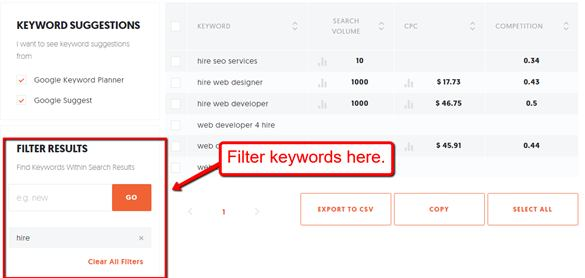
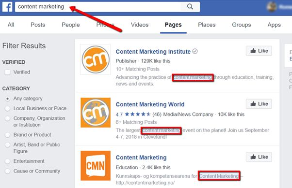
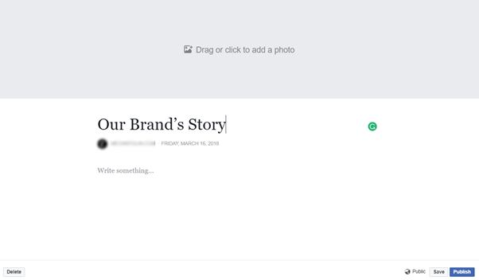

Keyword research is a fundamental activity that determines the success of all online marketing strategies — including SEO, PPC, content marketing, and email marketing.
Social media marketing is no exception.
Just like with search engines, users rely on keywords to find businesses, content, and other people on social media.
Sometimes, they perform navigational search queries wherein they type in a specific brand or product name. Other times, they simply enter phrases or questions and let the social media website do the rest.
As a marketer, your goal is to make sure your brand is front and center whenever users make these queries. And that’s why you need an effective keyword research strategy.
The Importance of Keyword Research for Social Media
When it comes to social media, proper keyword research not only improves your visibility on a platform’s internal search engine. It will also help you be in tune with the trends in your niche and figure out what makes your target audience tick.
This, in turn, will enable you to identify content gaps that you can fill, which can guide your content distribution and PPC efforts.
In this post, we’ll discuss the steps on how to use keyword research to boost your social media traffic.
Let’s dive right in.
1. Look for Long-Tail Keywords
The first step in keyword research is to expand a seed keyword into long-tail variations.
Put simply, seed keywords are broad terms that are too competitive for small players in any niche. If you pin your hopes on them, you’ll be pitted against bigger brands with more experience and deeper pockets.
To obtain long-tail ideas from your seed keywords, you can use a keyword research tool like Ubersuggest — a fast and reliable tool that’s also free to use. Just enter your seed keyword, adjust its localization, and click “Look Up” to generate hundreds of long-tail keyword suggestions in seconds.
Here are a few things you need to remember when conducting keyword research with Ubersuggest:
Avoid high competition keywords
In Ubsersuggest, keyword competitiveness is measured on a scale of 0.0 to 1.0. Go for low-medium competition keywords, which have a competitiveness score of around 0.4 or less.
Check for keyword seasonality
When analyzing keyword suggestions, point your mouse over the “graph” icon to the left of the search volume metric to view its monthly performance. To ensure traffic all year round, don’t put all your eggs on seasonal keywords that may fall off in terms of search volume for several months.
Look for keywords with commercial intent
You can also add filters to help you find long-tail keywords with commercial or transactional intent. Some examples of the terms you can add are “hire,” “price,” and “buy.”

2. Weave Keywords Into Your Social Media Pages
Now that you have a fresh lineup of long-tail keywords, the next step is to sprinkle them throughout your social media pages.
There’s no need for specific instructions or fancy tools to complete this step.
However, you must remember to sparingly and naturally insert your keywords in key areas, like the “Bio” section on Instagram and the “Summary” section on LinkedIn — preferably within the first few sentences to increase your visibility on internal search engines.

In networks like Google+ and Facebook, you also have the opportunity to share a compelling story about your brand. Yes, it’s a good idea to include your keywords there as well.

Here are some additional tips on optimizing your social media pages for keywords:
- Don’t Force Keywords.
Just like anywhere else, readability comes before keyword optimization in social media marketing. This shouldn’t be too hard, especially if you have well-researched keyword ideas that are truly relevant to your brand. - Add Keywords in Photo Captions.
It may sound tedious, but with a little creativity, you can always include keywords in photo descriptions. This will boost the searchability of your visual content along with everything else where it’s added. - Use Keywords when Sharing Content.
Be sure to incorporate keywords whenever you share content on your page. This will make your brand more visible when users search for posts or events. - Research Hashtags.
If you’re trying to increase visibility on networks like Twitter and Instagram, don’t forget to do adequate hashtag research. Remember, these social networks use hashtags rather than plain keywords as the primary means of content discovery.
3. Use Keywords to Find Niche-Relevant Groups
A great way to grow your brand’s social media reach is to join popular groups in your niche.
Fortunately, this is incredibly easy to do once you have a portfolio of well-targeted keywords.
For example, let’s say your target keyword is “intermittent fasting for women.” On Facebook, all you need to do is enter this keyword and navigate to the “Groups” tab.

The more specific the group, the better. Just be sure to participate by liking content, leaving comments, and answering questions to get attention for your own brand.
Of course, you can also do this to connect with influencers and community pages that will help grow your social reach.
4. Keyword-Optimize Your Content
At the end of the day, social media marketing works best with stellar content from your own website.
It’s not rocket science. If you constantly share quality content with your social media followers, you encourage engagement in the form of likes, comments, and shares.
With keyword research, you’ll never run out of share-worthy content ideas for social sharing purposes. Eventually, your content may reach the news feeds of influencers and popular bloggers — improving your chances of receiving valuable backlinks for organic traffic and higher search engine rankings.
All these will exponentially increase your online reach and build your credibility as an information source.
Conclusion
Keyword research is a critical aspect of online marketing that plenty of marketers love to overlook.
Hopefully, the post above made you realize the significance of keyword research and how doing it correctly can impact your social marketing efforts.
Do you think I missed an important step that can help others with their keyword research? If so, feel free to post a comment about it below!
Ben says
I’m glad you guys mentioned how people shouldn’t target keywords that are high competition. I myself in the start, with several others, became over confident and ended up emptying my pockets!
Avoid this mistake people!
Drake says
Buyer intent keywords may have low search volume but are highly converting. The key is to target masses of buyer intent kw’s to see optimal results.
Adam says
That is true, however some people miss on this train.
Drake says
Are there any other keyword research tools other then ubersuggest? If so, which ones?
Adam says
Hmm good question, I might do some research and do an article on this 🙂
Harvey says
Many people are still living in 2008 and think stuffing keywords will make them more visible in the eyes of the search engines.
The total opposite happens. Search engines see this as spammy and can even penalize your website or content!
Matthew says
Proper, thought-out hashtag research can really drive high quality targeted traffic. Can vouch for this by experience.
Adam says
Thanks for sharing your experience with us Matthew
Grace says
It’s very hard to find facebook groups manually, any ideas on a tool that may help?
Omar says
Jarvees facebook group tool really works great in finding niche relevant or keyword relevant groups. Have used it several times and works like a charm
Adam says
Glad to hear that!
Adam says
Jarvee can do that easily and really good, give it a try!
Jaromir says
Writing an article with proper on-page SEO can also give you the added bonus of driving search traffic. It works pretty well with low competition keyword.
Leo says
Marketers make the mistake of reserving keyword research for SEO. Little do they know it is equally important with social media.
Ehh, well, that means less competition for me!
Adam says
It won’t last long and they’ll start to figure it out so milk it while you can 😉
mama fatia says
Your right Adam, Jarvee does it easily, it have tried using but it was was really good
meenal says
Hey Hii,
Very good insight..
Gives a brief description of keyword reserach and easily understandable as a beginner perspective.
would u please describe the different types of keyword as in SEM prospective.
Tolga says
Creating thorough keyword research strategy is crucial preparation for the next steps you will be taking through realization of your marketing strategy. That being said, this should be done carefully and with attention.
Ingrid Park says
You can easily find groups groups based on keyword search with Jarvee Finder tool. Then when you send these groups to Joiner tool, Jarvee will automatically send join requests to niche related groups. You will set this in just few minutes and Jarvee will be joining groups for you every day. This way you will be part of the community that is interested in the same niche as you are.
Huan Verdasco says
Just great article, it’s different from others.I actually can learn from it 🙂 So many things which we all can apply into our marketing strategy. Thanksagain for sharing this great article!
Ronaldo Rice says
A good strategy is to use keywords on your social media on every occasion when this is possible. Of course, you shouldn’t overdo it. This should look natural and professional. It’s crucial to incorporate your keywords on social media marketing platforms and posts.
Henrik Ljundberg says
I can’t underline enough the importance of keyword positioning. It’s 90% of the business strategy. Use all possible sources to get the best position out there.
Ammer Ali says
I can’t underline enough the importance of keyword positioning. It’s 90% of the business strategy. Use all possible sources to get the best position out there.